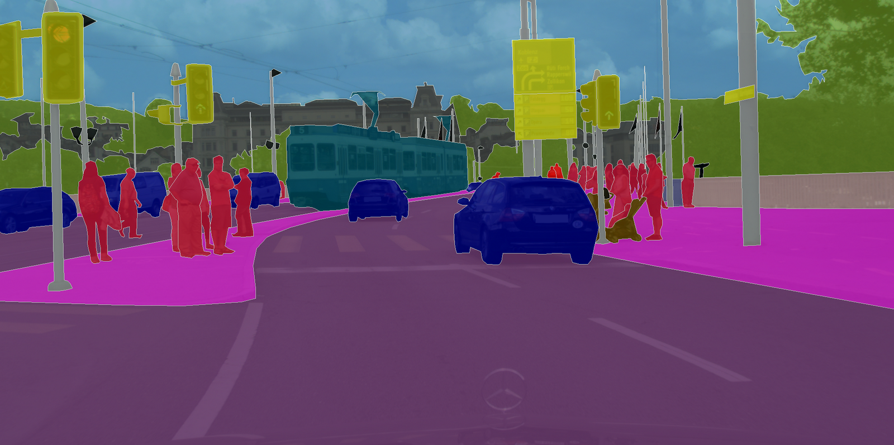
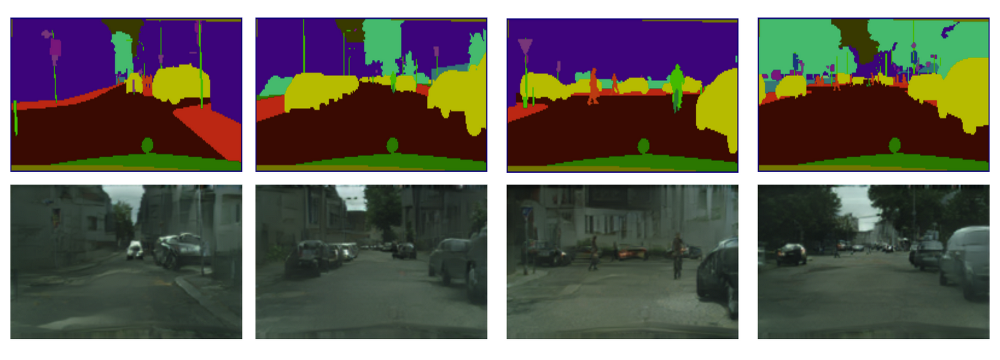
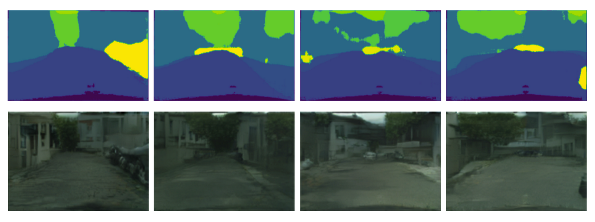
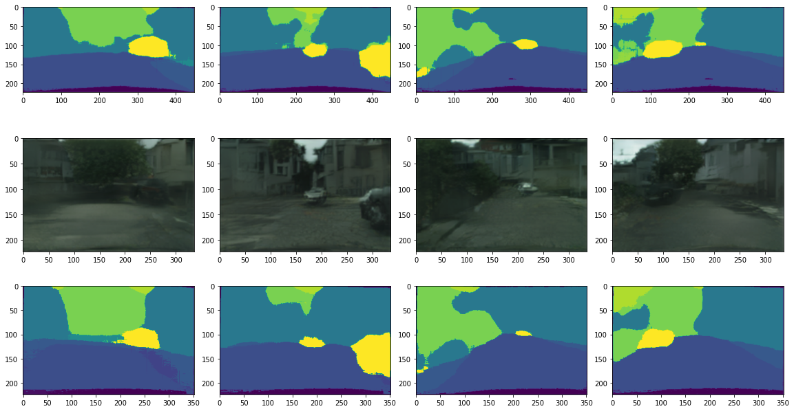

The primary goal of this final project was to be an exploratory endeavor into two of computer vision's deep learning problems: semantic segmentation and generative vision models. The end product is a semantic segmentation and SPADE pipeline such that both topics could be explored at an introductory level. The high level understanding is that the segmentation model takes an image as an input and outputs a segmentation map; this segmentation map is then fed into a conditional generative adversarial network, specifically SPADE.
Since both problems I am trying to solve involve deep learning models, it is equally important to choose a good data set. I chose to use the finely annotated Cityscapes dataset because it for training a segmentation model.
Example Cityscapes image overlayed with its annotated segmentations
For this portion of the project, I decided to follow a transfer-learning approach with a pre-trained model rather than training a newly initialized fully convolutional network. I opted to use a ResNet-34 pre-trained on ImageNet. I had performed experiments with ResNet-50 and ResNet-18 but found that performance vs. training speed were best with ResNet-34. The details of the model is that I replace the average pool and fully connected layer of ResNet-34 with a 1x1 kernel convolutional layer followed by a transpose convolutional layer. This model was then trained end-to-end with an Adam optimizer for 25 epochs with a batch size of 32 and a learning rate of 1e-4.
Pictured on the left is the loss history of the model while training. Since validation loss is normally just slightly higher than training loss, this means our model is not overfitting and is generalizing well.
**Note that training error is calculated as a running error while training which is was causes the initial spike**
Pictured below are some example results of my model on training and validation splits. In both figures, the top row of images are example training images. The middle row is the training images' true segmentation. The third row is the output maps of my segmentation model.
As is evident from the above figure, the model is relatively imprecise with it's pixel-wise-classifications but is able to capture the general structure of each image. There are a few examples where misclassifications appear to happen such as in the final column of the validation data example. However, this is likely because Cityscapes contains specific classes for car, caravan, truck, and trailer, all of which are fairly similar objects that my model appears to just classify as car. A similar misclassification also appears to happen with person and rider. Likely, these specific classifications would be improved with more training or a larger model.
For this portion of the project, I decided to simply use a pre-trained SPADE generator without any alterations. I first tested the pre-trained SPADE model on true labels to visualize how well the pre-trained model performs. I passed in the label id maps of every validation image as the input to the SPADE model and then visualized each generated image pair. Unfortunately, the results of the pre-trained SPADE model are not quite as good as I had hoped. The direct input of true labels produced photos that made sense but fell short of realistic. Pictured below are results of the SPADE Generator.
Results of the SPADE generator conditioned on segmentation maps. The top row images are the inputs to the GAN and the second row images are the corresponding ouputs.
With a working segmentation model and a working SPADE generator, I could now pipeline the two together. The pipeline was a simple as feeding the output segmentations into the generator. Displayed below are some example results of the final generator ouputs.
Results of the SPADE generator from my model's prediction maps. The top row was my model's prediction maps and the second row is the synthesized images.
Given that neither the SPADE generator or my segmentation maps were that precise, the output images are about as good as expected. All the generated images show promise in terms of color, object differentiation, and general image structure. Nevertheless, It is impressive that given an imprecisise segmentation map, the generator was still able to generate a somewhat realistic image.
One interesting idea I had was what would happen if the generated image was passed back into the segmentation model. In theory, the generated image should not add significantly more structure in the images meaning that the generated image should produce roughly the same segmentation map. As a result, I decided to not only pipeline the segmentation map into SPADE, but pipelined the output of SPADE back into the segmentation model.
Four examples of feeding generated image into segmentation model. First row is original segmentation maps. Second row is the generated image from the map, third row is the new segmentation map
The results of this experiment are roughly what I expected. The new segmentation map is almost the exact same segmentation map as the original but with softer edges. This is actually a testament to the capabilities of the SPADE generator. It is able to generate objects with enough accuracy that not only is its discriminator fooled, but other models such as my segmentation model also see the correct object.
In regards to the project, I managed to get all my ideas and models functioning but I personally wish my results were a bit more interesting. For the semantic segmentation model, I would have liked to train for longer to get more accurate maps or worked with more complex models such as U-net. For the generator, I think had a idealized idea of what a pre-trained SPADE generator would do. If I had more time and could train my own GAN, I would likely spend some time researching how to add more specificity to the GAN such as generating an image in a specific city or at a specific time-of-day instead of just generating a general Cityscapes image.
Overall, I learned a lot throughout this project due to the open-ended style of the project. I gained experience in how to decide which data sets and models to use as well as how to extract valuable information from the many different existing git repositories. Especially with working with the SPADE generator, I had spent a lot of time reading through the code and readme files to understand how to actually use a pre-trained model. Additionally, I feel that I have learned better practices in my code when it comes to deep learning and working with a corpus of images. For example, I spent a lot of time just figuring out how to optimize image loading and saving in Colab.